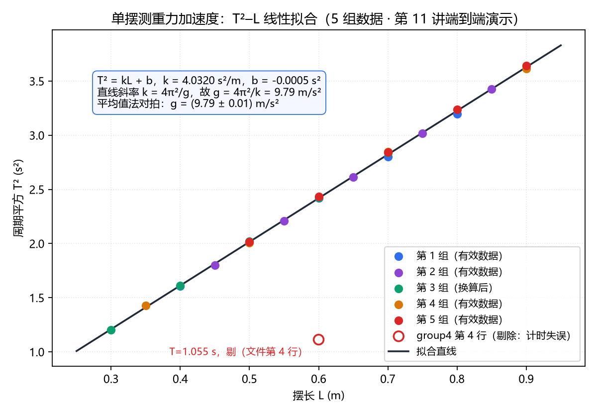

第 10 讲 多工具协同项目：从数据到汇报
第 8 讲你认识了能干活的数字同事，第 9 讲你指挥它跑通了一条数据处理流水线。本讲是 Agent 篇的验收讲：把"分析 → 图表 → Word 报告 → 汇报 PPT"串成一个完整的端到端项目——你做指挥官，Agent 做你的执行团队。
一、本讲学习目标
完成本讲后，你应该能够：
- 说出"多工具协同项目"与第 9 讲单线流水线的区别——多环节、多产物、跨软件，环节之间层层依赖；
- 用第 7 讲的任务卡方法，把端到端任务拆成"分析 → 图表 → 报告 → PPT"四段，每段写清验收标准，做到先规划、分段执行、逐段验收；
- 端到端指挥 AI Agent（智能体）完成"单摆"实验数据包从数据到汇报的全部交付；
- 排查数据包中预设的"坑"（单位不一致、异常值），并按物理规范（不确定度、有效数字）在报告中说明处理方式；
- 复盘全程的人机分工——哪些环节 Agent 高效、哪里必须人工纠偏——沉淀自己的"指令设计心得"。
二、课前准备
- 回顾第 7 讲的任务分解方法（目标 → 成果物 → 里程碑 → 步骤）与任务卡模板：输入 / AI 动作 / 人工动作 / 产出物 / 验收标准——本讲全程要用；
- 带上第 9 讲养成的对拍习惯：本讲所有 AI 算出的物理结果（g、不确定度），都要抽查核验后才允许写进报告；
- 领取教师发放的实验数据包：单摆周期测量数据（原始 CSV + 要求清单）。包里预埋了"坑"，本讲专门训练你的把关能力；
- 确认 ZCode 可正常登录；本讲仍在练习目录内操作，动手前先把原始数据包复制一份备份；
- 提前浏览要求清单，明确最终交付物一共几样、各长什么样。
三、核心概念精讲
1. 从"一条流水线"到"一个项目"
第 9 讲的"实验数据处理流水线"是一条单行道：数据进去，报告出来，各步骤环环相扣，但最终产物只有一份。本讲把难度升一级——做端到端的多工具协同项目：同一包数据，要交付四样东西：数据分析结果、图表、Word 报告、汇报 PPT。
它和流水线有三个本质区别：
- 多环节：分析、绘图、写报告、做 PPT，是四种性质不同的活儿；
- 多产物、跨软件：CSV 数据文件、PNG 图片、Word 文档、PPT 演示文稿，横跨好几个软件；
- 强依赖：图表依赖分析结果，报告依赖图表，PPT 依赖报告结论——像误差传递一样，前一个环节的错会一路传进最后一环。g 算错了，后面 PPT 做得再漂亮也救不回来。
所以本讲的方法论一句话：先规划、分段执行、每段验收。第 7 讲的任务卡与验收清单，在这里从"纸面方法"变成"实战武器"。
2. 指挥官 + 专家团队：Agent 项目的组织方式
任务一大，让一个 Agent 从头包办到尾，就容易顾此失彼——就像让一个人同时又做实验、又算数据、又写报告、又排版。用一个直观的组织隐喻讲这件事：指挥官 + 专家团队。
- 主智能体（指挥官）：由大模型（LLM）驱动，负责理解目标、制定计划、分派任务、汇总成果——它不亲自干每一件小事，而是负总责；
- 子智能体（Subagent）（专家）：由指挥官分派的专项助手，每位专家带着独立的上下文窗口和有限的权限去执行专项任务，干完活向指挥官汇报。
这个组织方式就是物理实验课的小组分工：组长读任务书、定分工、收结果；组员各自负责测量、记录、数据处理，互不干扰——没有人一边盯着别人的数据一边做自己的事。
指挥官组织项目的过程，可以概括为四个阶段（重绘自课程"规划 → 并行执行 → 合成 → 交付"流程图）：
| 阶段 | 指挥官在做什么 | 对应本讲的项目 |
|---|---|---|
| ① 规划 | 理解需求，把项目拆成环节，形成计划 | 拆出"分析 → 图表 → 报告 → PPT"四段，附验收清单 |
| ② 并行执行 | 把各环节分派出去，能并行的同时推进，互不阻塞 | 数据体检与绘图的准备工作可同步展开 |
| ③ 合成 | 汇总各方结果，消除矛盾、统一口径 | 保证报告与 PPT 里的 g、不确定度完全一致 |
| ④ 交付 | 输出成果，汇报"做了什么、放在哪里" | 交付 Word 报告与 PPT，附产物清单 |
还有一个值得记住的细节——最小权限：每位专家只拿到完成本职所需的工具，比如只有负责"跑数据"的专家才需要执行命令的权限。这与第 8 讲讲过的权限（只读 / 默认 / 自动审批 / 完全访问）四档是同一条原则：权限越小，失误的代价越小。
"指挥官 + 专家团队"是一种组织思想；你的课堂 Agent（ZCode）同样按"先规划、再逐段执行"的方式工作，是否支持自动分派子智能体，以官方文档为准。而在本讲的课堂里，"指挥官"这个角色其实由你来扮演：你规划（任务分解表）、你分派（下指令）、你合成（验收与统一口径）——Agent 是你手上的专家团队，你的逐段验收就是"合成"环节里最重要的一道关。
3. 把方法写成"方法卡"：诊断 → 可视化 → 报告
课程笔记里有一个分析时间序列数据的技能案例，核心思想非常"物理"：拿到一串数据，先体检，再画图，最后下结论。这套方法被固化成三步工作流（重绘自课程案例，各步的输入与输出都写得明明白白）：
| 步骤 | 做什么 | 输入 | 输出 | 物理版：测量数据体检 |
|---|---|---|---|---|
| ① 诊断 | 全面检查数据的特征与质量 | 原始 CSV | 诊断结论文本与指标 | 各组测量有无异常值、有无漂移趋势，测量稳定性如何 |
| ② 可视化 | 把数据与诊断结果画成图，让问题"看得见" | 数据 + 诊断结果 | 一组诊断图 | T²–L 图：偏离直线的点一眼可见 |
| ③ 报告 | 汇总结论，给出建议 | 诊断结论 + 图 | 结论文本 | 报告的"结果与讨论"：g 的值、不确定度、可信度与改进建议 |
三步的顺序不能乱：没做诊断就画图，一个异常点可能把坐标轴拉得很怪；不看图就写结论，等于闭着眼睛下诊断。
这个案例还有一层更重要的启示：为什么要把方法写成文件？课程的做法是建一个文件夹：SKILL.md（方法说明书：什么时候用、分几步、每步产出什么），scripts/（每一步要跑的脚本），references/（结果怎么判读的标准）。好处有三条：
- 可复用：下次换一组实验数据，方法原样能用——就像实验讲义年年能用；
- 可检查：判读标准白纸黑字，哪一步出了问题能定位到——就像实验规程让误差可以溯源；
- 可交接：同学接手也能照着做——就像把实验方法沉淀进小组文档。
这正是技能（Skill）思想的落地：把"老师傅的手感"变成"人人可执行的规程"。第 5 讲你写过带 YAML 元数据的提示词卡，SKILL.md 就是它的"完全体"——开头同样是元数据，声明"我是谁、何时用我"；正文写清完整工作流程。
4. 数据体检三查：单值正常，不等于组合正常
课程笔记里还有一个分析营销活动数据的技能案例，本讲只借它的骨架——这个骨架其实是所有数据分析的通用三段式：先查数据质量，再算指标对比，最后给建议。改写成物理版：
第一段：数据质量检查（三查）
- 查缺失：有没有漏记的格子——比如某次计时的周期是空的；
- 查不合理值：有没有物理上不可能的数——周期不能为负，摆长不能为零；
- 查异常组合：单个数看都正常，放在一起看就矛盾——比如摆长 0.600 m 却记下 T = 0.35 s：按 T = 2π√(L/g)，0.600 m 单摆的周期应在 1.55 s 上下，明显对不上。
第二段：指标对比——各组测量数据各算各的 g 与不确定度，横向比较：哪组不确定度小、没有异常值，哪组数据就更可信。
第三段：给建议——哪组数据的计时方法需要改进、哪些数据需要重测、最终 g 取什么范围。
AI 可以把"三查 → 对比 → 建议"整段流程跑得又快又全，但"什么算异常、剔除是否合理"的物理判断权在你。数据包里预埋的"坑"，考的正是这条界线：Agent 能发现"60.0 这个数和别组不一致"，但"它到底是 cm 还是漏了小数点"要靠你查原始记录。
四、物理场景案例演示
本讲任务：教师发放单摆实验数据包，端到端产出数据分析 → 图表 → Word 报告 → 汇报 PPT。数据包长这样：
| 文件 | 内容 |
|---|---|
| data/group1.csv … group5.csv | 5 组单摆测量数据：摆长 L 与对应测得的周期 T（各组测量点略有差异） |
| 要求清单.txt | 最终交付物（分析结果、图表、Word 报告、汇报 PPT）与各环节验收标准 |
注意：数据包里预埋了 2 处"坑"（不告诉你在哪）。下面是指挥全程的指令序列——请注意它和你以前的提示词最大的不同：这不是一条指令，而是一套"规划—分段—验收"的节奏。
这套指令序列（含各环节按实测优化后的最终版）已在 ZCode 里真实跑通一遍：数据包真实生成、五条指令真实执行、四样产物真实落盘——沙盒与运行日志在 demo_runs/ch11/，Word 报告与汇报 PPT 副本在 资料\demo_results\ch11\。每条指令框下方的折叠区就是实测记录（含踩坑与修复过程），建议先看再仿做。
先不要处理数据。请阅读"要求清单.txt"和 data/ 下的全部数据文件，
按"分析 → 图表 → Word 报告 → 汇报 PPT"四个环节做任务分解，
输出一张任务分解表：每个环节写清 输入 / 你要做什么 / 产出物 / 验收标准，
并给出建议的输出目录结构；计划末尾列出你预计创建的全部文件（含路径）。
输出计划后停下，等我确认。拆解这条指令——它用足了前几讲的两件武器：
- 任务分解（第 7 讲）：四个环节就是四张任务卡，产出物与验收标准写在前头；
- 最后一句是点睛之笔："输出计划后停下，等我确认"——把指挥权留给自己，规划错了改计划很便宜，做完四环再返工就很贵。
🧪 查看运行结果（ZCode 实测）——指令 0：规划与任务分解
AI Agent 真实执行并生成上述结果（执行环境：GLM+ZCode）。
[盘点] 读取 要求清单.txt 与 data/ 下全部数据文件：
group1.csv: 表头 ['摆长L(m)', '周期T(s)']，5 行数据
group2.csv: 表头 ['摆长L(m)', '周期T(s)']，5 行数据
group3.csv: 表头 ['摆长L', '周期T(s)']，5 行数据
group4.csv: 表头 ['摆长L(m)', '周期T(s)']，5 行数据
group5.csv: 表头 ['摆长L(m)', '周期T(s)']，5 行数据
要求清单.txt: 26 行，最终交付物 4 样（分析结果 / PNG 图 / Word 报告 / 汇报 PPT）
合计 25 行测量数据，涉及 2 列物理量（摆长 L、周期 T）
—— 任务分解表（outputs/00_任务分解表.md，节选）——
环节一 数据体检与计算：三查（缺失 / 不可能值 / 组合矛盾），先横向比对各组
量级与范围，再逐组检查；通过后由 g = 4π²L/T² 计算各组及总体 g
（平均值 ± 平均值的标准差，3 位有效数字，m/s²），逐点列表供人工对拍
⏸ 停等点：可疑数据如何处置，先报告并等待指挥官确认，不擅自剔除
环节二 绘制 T²–L 图 → results/figures/ch11-t2l-fit.png
（轴标签含物理量与单位；图注写明"直线斜率 k = 4π²/g，故 g = 4π²/k"）
环节三 Word 报告（目的 / 仪器与方法 / 数据与处理 / 结果与讨论 / 数据说明 / 结论）
→ results/report/单摆测重力实验报告.docx，数值一律引用环节一锁定值
环节四 汇报 PPT（不少于 6 页）→ results/slides/单摆测重力汇报.pptx，
关键数字只从环节三报告引用、不得重算
预计创建的文件清单：01_数据体检报告.md、02_计算结果.md、ch11-t2l-fit.png、
单摆测重力实验报告.docx、单摆测重力汇报.pptx
—— 不修改、不删除、不覆盖 data/ 下任何原始文件。
⏸ 按指令要求，计划到此停住，等待指挥官确认后再开始环节一。
运行日志全文：demo_runs/ch11/logs/step1_plan.txt；任务分解表全文：demo_runs/ch11/数据包/outputs/00_任务分解表.md。确认计划后按此执行，即进入指令 1。
环节一：数据体检与计算。
对 data/ 中 5 组数据逐一检查：缺失值、物理上不可能的值
（如负周期）、"单个值正常但摆长与周期组合矛盾"的情况；
先横向比对各组的量级与范围，再逐组检查，
汇报你发现的所有可疑之处。
检查通过后，由 T² = 4π²L/g 反解 g = 4π²L/T²，
计算每组及总体的 g 平均值，并用平均值的标准差估计不确定度，
逐点列出每个测量点的 g 值（表格），便于人工对拍抽查，
结果保留 3 位有效数字，单位 m/s²。
异常数据如何处理，先问我再动手，不要擅自剔除。🧪 查看运行结果（ZCode 实测）——指令 1：数据体检（两处"坑"现形）
AI Agent 真实生成了 5 条文献推荐并逐条查证（执行环境：GLM+ZCode）。本次未出现编造——但幻觉是概率事件，没编造≠次次不编造。
环节一 · 数据体检（三查：缺失 / 不可能值 / 组合矛盾；先横向比对，再逐组检查）
第 0 步 横向比对（各组摆长、周期的范围）：
group1: L 范围 0.400 ~ 0.800，T 范围 1.267 ~ 1.788 s
group2: L 范围 0.450 ~ 0.850，T 范围 1.341 ~ 1.851 s
group3: L 范围 30.000 ~ 70.000，T 范围 1.096 ~ 1.684 s
group4: L 范围 0.350 ~ 0.900，T 范围 1.055 ~ 1.901 s
group5: L 范围 0.500 ~ 0.900，T 范围 1.420 ~ 1.908 s
-> group3 的摆长数值比其余组大 1~2 个数量级，且表头'摆长L'未标单位：疑单位不一致
第 1 步 查缺失：逐格扫描 25 行 × 2 列……无空单元格。
第 2 步 查物理上不可能的值：摆长、周期均 > 0，无负值、无零。
第 3 步 查'单值正常、组合矛盾'：逐行按 g = 4π²L/T² 反算（L 按文件原样取数）：
……（group1、group2 逐行 g 均在 9.79~9.88 m/s²，无异常，节选略去）
group3（表头：摆长L,周期T(s)）逐行 g：
文件第 2 行：L = 30.0，T = 1.096 s -> g = 985.96 m/s²
文件第 3 行：L = 40.0，T = 1.270 s -> g = 979.07 m/s²
文件第 4 行：L = 50.0，T = 1.422 s -> g = 976.18 m/s²
文件第 5 行：L = 60.0，T = 1.557 s -> g = 977.09 m/s²
文件第 6 行：L = 70.0，T = 1.684 s -> g = 974.48 m/s²
group4（表头：摆长L(m),周期T(s)）逐行 g：
文件第 2 行：L = 0.350，T = 1.195 s -> g = 9.68 m/s²
文件第 3 行：L = 0.500，T = 1.417 s -> g = 9.83 m/s²
文件第 4 行：L = 0.600，T = 1.055 s -> g = 21.28 m/s² <-- 可疑
文件第 5 行：L = 0.700，T = 1.687 s -> g = 9.71 m/s²
文件第 6 行：L = 0.900，T = 1.901 s -> g = 9.83 m/s²
……（group5 逐行 g 均在 9.72~9.79 m/s²，无异常，节选略去；全量输出见 demo_runs/ch11/logs/）
体检结论（共 2 处可疑，均为'单值正常、组合不正常'）：
可疑点 1｜group3 整组摆长：数值 30.0~70.0，比其余 4 组（0.350~0.900）大约 100 倍，
表头'摆长L'未标单位；若按 m 处理，该组 g ≈ 979 m/s²，物理上不可能。
旁证：该组周期 1.10~1.68 s 与其余组同量级，反推 L 应为 0.30~0.70 m，
即数值按 cm 录入（60.0 cm = 0.600 m）。需查原始记录确认。
可疑点 2｜group4 文件第 4 行：L = 0.600 m、T = 1.055 s，g = 21.28 m/s²，
偏离其余各行（9.68~9.88）约 116%；同组同摆长量级的理论周期约 1.56 s。
疑计时失误（如少记摆动次数），建议剔除，理由写入报告'数据说明'。
其余 19 行（除 group3 整组 5 行与本行外）：缺失、负值、组合矛盾均未见。
⏸ 停等（指令原文：异常数据如何处理，先问我再动手，不要擅自剔除）。请指挥官确认：
问题① group3 的摆长单位是否确认为 cm（60.0 -> 0.600 m，换算后参与计算）？
问题② group4 文件第 4 行是否按'计时失误'剔除（保留在图上以空心点标注）？
—— 指挥官决策（人工验收点，记录于 outputs/01b_指挥官决策.md）——
① group3 确认按 cm 换算为 m 参与计算（查原始测量记录：数值 30.0~70.0 按 cm 记录，
60.0 即 0.600 m；其周期量级与其他组一致亦佐证）。换算而非删数据。
② group4 文件第 4 行按计时失误剔除，图上以空心点保留并注明，理由写入报告"数据说明"。
运行日志全文：demo_runs/ch11/logs/step2_check.txt；体检报告与决策记录：demo_runs/ch11/数据包/outputs/。注意顺序：先停等、后处置——这就是"异常数据处置确认"验收点的实际样子。
环节二：绘图。
用全部有效数据绘制 T²–L 图：横轴 L（m），纵轴 T²（s²），
标出数据点并拟合直线；在图注中写明
"直线斜率 k = 4π²/g，故 g = 4π²/k"。
被剔除的数据（如有）用空心点标出并注明；绘图时指定
中文字体（如微软雅黑），防止轴标签乱码。输出 PNG 图片。🧪 查看运行结果（ZCode 实测）——指令 2：计算 g 与 T²–L 拟合图
AI Agent 真实执行并生成上述结果（执行环境：GLM+ZCode）。
已读取指挥官决策：group3 按 cm 换算为 m；group4 文件第 4 行剔除。
环节一 · 计算（有效数据 24 行，剔除 1 行）
逐点 g = 4π²L/T²（供人工对拍抽查）：
组 L(m) T(s) g(m/s²) 文件行号
1 0.400 1.267 9.84 第 2 行
1 0.500 1.420 9.79 第 3 行
1 0.600 1.555 9.80 第 4 行
1 0.700 1.673 9.87 第 5 行
1 0.800 1.788 9.88 第 6 行
2 0.450 1.341 9.88 第 2 行
2 0.550 1.486 9.83 第 3 行
2 0.650 1.616 9.83 第 4 行
2 0.750 1.737 9.81 第 5 行
2 0.850 1.851 9.79 第 6 行
3 0.300 1.096 9.86 第 2 行
3 0.400 1.270 9.79 第 3 行
3 0.500 1.422 9.76 第 4 行
3 0.600 1.557 9.77 第 5 行
3 0.700 1.684 9.74 第 6 行
4 0.350 1.195 9.68 第 2 行
4 0.500 1.417 9.83 第 3 行
4 0.700 1.687 9.71 第 5 行
4 0.900 1.901 9.83 第 6 行
5 0.500 1.420 9.79 第 2 行
5 0.600 1.560 9.73 第 3 行
5 0.700 1.686 9.72 第 4 行
5 0.800 1.799 9.76 第 5 行
5 0.900 1.908 9.76 第 6 行
各组平均： group1 = 9.83; group2 = 9.83; group3 = 9.79; group4 = 9.76; group5 = 9.75;
总体：g 平均值 = 9.794 m/s²，平均值的标准差 = 0.011 m/s²
对拍① 最小二乘拟合 T² = kL + b：k = 4.0320 s²/m，b = -0.0005 s²（接近 0，合理）
由 g = 4π²/k 得 g = 9.791 m/s²（与平均值法一致才采信）
对拍② 手算抽查 group1 第 4 行：g = 4π²×0.600/1.555² = 9.80 m/s²，与逐点表一致
锁定关键数字：g = (9.79 ± 0.01) m/s²（3 位有效数字）
[产出] outputs/02_计算结果.md（格式固定，环节三、四只引用不重算）
[产出] T²–L 图已保存：results/figures/ch11-t2l-fit.png（副本同步至 course-site/assets/images/results/）

图：T²–L 线性拟合（matplotlib 实绘）。轴标签含物理量与单位，图注写明 k = 4π²/g，被剔除行以空心点保留并注明——对应演示③的验收标准。
环节三：生成 Word 报告。
生成前先列出你将创建的全部文件（含路径），确认后动手；
生成后读回自查：节数、图、关键数值逐项核对。
结构：实验目的 / 仪器与方法 / 数据与处理 / 结果与讨论 / 结论。
其中"数据与处理"必须包含数据体检记录；"结果与讨论"给出
g 的平均值、不确定度与有效数字说明；
单列一节"数据说明"：写清哪些数据被剔除、理由是什么。
把环节二的图插入对应位置，所有数值与环节一结果保持一致。🧪 查看运行结果（ZCode 实测）——指令 3：Word 报告生成与读回自查
AI Agent 真实执行并生成上述结果（执行环境：GLM+ZCode）。
[引用] 读取 02_计算结果.md 锁定值：g = (9.79 ± 0.01) m/s²（拟合对拍 g = 9.79）
读回自查：
标题节：6 个 -> 一、实验目的 / 二、仪器与方法 / 三、数据与处理（含数据体检记录）
/ 四、结果与讨论 / 五、数据说明（换算与剔除理由） / 六、结论
表格：2 个（表 1 逐点 24 行；表 2 各组 5 行）
插图：1 张（T²–L 拟合图）
关键数值「g = (9.79 ± 0.01)」：在文档中
关键数值「k = 4.032」：在文档中
关键数值「21.28」：在文档中
关键数值「60.0 cm = 0.600 m」：在文档中
关键数值「约 0.2%」：在文档中
[产出] 数据包/results/report/单摆测重力实验报告.docx
[产出] 副本已存 资料/demo_results/ch11/单摆测重力实验报告.docx
报告含体检记录与"数据说明"一节（group3 换算依据、group4 剔除理由），关键数字与指令 1、2 完全一致；全文可打开 资料\demo_results\ch11\ 核对。
环节四：生成汇报 PPT。
不少于 6 页：封面 / 实验思路 / 数据与方法 / 结果（T²–L 图）/
数据质量与误差讨论 / 结论。
关键数字（g、不确定度）必须与 Word 报告完全一致；
一律从报告引用，不得重新计算；
结论页用一句话说清"这次测量可信度如何、下一步如何改进"。🧪 查看运行结果（ZCode 实测）——指令 4：汇报 PPT 生成与大纲
AI Agent 真实执行并生成上述结果（执行环境：GLM+ZCode）。
[引用] 从 Word 报告提取锁定结论：g = (9.79 ± 0.01) m/s²（PPT 全程只用这一口径）
读回自查：共 6 页（要求不少于 6 页）；插图 1 张（结果页）
关键数字「(9.79 ± 0.01)」出现次数：3（标题 + 结论页口径一致）
「21.28」「60.0 cm」等过程数字未直接进 PPT：通过
—— 每页要点（outputs/汇报PPT大纲.txt）——
[封面：单摆测重力加速度]
从数据到汇报的端到端协同演示 —— 数据分析 图表 报告 PPT
《人工智能应用基础》第 10 讲 多工具协同项目（演示组）
[第 2 页 实验思路]
原理：单摆周期 T = 2π√(L/g)，反解 g = 4π²L/T²
线性化：T² = (4π²/g)·L，T²–L 应为过原点直线，斜率 k = 4π²/g
流程：先规划 → 数据体检 → 计算 → 绘图 → 报告 → 汇报（每段设验收点）
两个必停的人工确认点：计划确认、异常数据处置确认
[第 3 页 数据与方法]
数据包：5 组摆长 L–周期 T 测量，共 25 行
数据体检（三查）：查缺失 / 查不可能值 / 查组合矛盾 + 组间横向比对
发现 2 处可疑：group3 摆长未标单位且大 100 倍；group4 第 4 行 T–L 组合矛盾
处置（人工确认）：group3 按 cm 换算为 m（查原始记录佐证）；group4 剔除 1 行
有效数据 24 行，逐点 g = 4π²L/T² 列表供对拍
[第 4 页 结果：g = (9.79 ± 0.01) m/s²（含 T²–L 图）]
逐点平均：g = 9.79 m/s²，平均值的标准差 0.01 m/s²（n = 24），3 位有效数字
T²–L 拟合对拍：k = 4.032 s²/m，截距 ≈ 0，g = 4π²/k 一致
两种独立算法结果一致，数值可信
[第 5 页 数据质量与误差讨论]
2 处预设"坑"均被体检拦截：单位不一致 → 换算不删数据；计时失误 → 剔除并空心点标注
不确定度含义：平均值的标准差，只反映本批数据随机散布（A 类），未含仪器允差（B 类）
主要误差来源：单次计时的人工反应误差
改进：测 30 个周期取平均、统一数据录入单位规范、增加测量点
[第 6 页 结论：g = (9.79 ± 0.01) m/s²]
测量结果 g = (9.79 ± 0.01) m/s²（3 位有效数字），与标准值 9.8 m/s² 相对偏差约 0.2%
可信度：体检拦截 2 处坏数据、两种算法对拍一致、残差均匀 —— 结论可信
下一步改进：延长计时样本（30T 取平均）、预统一录入规范、扩大摆长范围
人机分工复盘：Agent 跑腿快而全，发现"为什么异常"与最终采信由人把关
PPT 文件与大纲副本：资料\demo_results\ch11\单摆测重力汇报.pptx、汇报PPT大纲.txt。至此四样产物（分析结果、图、报告、PPT）全部落盘，关键数字同源锁定。
回头看这套指令序列的节奏：五条指令之间嵌着两个人工验收点——计划确认（演示①之后）与异常数据处置确认（演示②之后）。这就是"端到端指挥"的真实样子：AI 跑腿，你把关，关键处叫停。
五、课堂实操任务单
- 本讲仍在教师指定的练习目录内操作，动手前先复制一份原始数据包作为备份；
- 两个关键节点（计划确认、异常数据处置）必须让 Agent 停下来等你确认；
- 所有 AI 算出的物理结果，对拍抽查后才算验收通过。
按"先规划 → 分段执行 → 按验收清单自查"完成端到端项目。每完成一项，在方框中打勾（勾选状态会自动保存）：
第 2 节收尾，全组对照下表复盘，把你们的实例填进去，汇入全班的"指令设计心得"：
| 环节 | Agent 的表现 | 为什么必须人工把关 |
|---|---|---|
| 数据体检 | 快而全：缺失、负值、组合矛盾一遍扫完 | "异常"的物理原因（计时失误？摆线松动？）只有做过实验的人能判断 |
| 计算 g 与不确定度 | 算得快、不犯手误 | 结果必须对拍抽查——AI 产出，人工把关 |
| 绘图 | 坐标轴、单位、拟合一步到位 | 图注是否科学、被剔除数据如何标注，需要你定 |
| Word 报告 | 结构完整、格式规范、成文极快 | 物理解读与结论是报告的灵魂，AI 写的要逐句核实 |
| 汇报 PPT | 排版、提纲、配图效率极高 | 数字口径要统一；讲稿必须是你自己的理解 |
六、常见坑与翻车案例
- 坑① 一句话下大单："帮我把这包数据做成报告和 PPT"——一口气交代到底，中间没有任何验收点，一个环节出错，四样产物全错。解法：先规划、分段执行，关键节点叫停确认。
- 坑② 跳过体检直接算：不查数据就下指令"算出 g"，摆长单位不一致没被发现，g 直接错上百倍，后面全盘作废。解法：任何计算之前，第一步永远是数据体检。
- 坑③ 异常值静默消失：Agent 自作主张把"难看"的数据删了却不吭声——数据变漂亮了，但结论失去依据。解法：指令里写明"异常数据如何处理先问我"；报告必须有"数据说明"一节。
- 坑④ 图注裸奔：T²–L 图没有轴单位、没写斜率的物理含义，互评时被一眼挑出。解法：把"图注规范"写进绘图指令和验收清单。
- 坑⑤ 报告与 PPT 数字打架：分段生成时各环节"各自为政"，报告写 g = 9.80 m/s²，PPT 却是 9.81 m/s²。解法：分析结果确定后先"锁定"关键数字，再要求所有产物与之一致（"合成"阶段的本职工作）。
- 坑⑥ 产物满天飞：图存在一个目录、报告存在另一个目录，最后打包时缺三少四。解法：规划阶段就让 Agent 定好输出目录结构，所有产物各归其位。
七、自测
1. 端到端多工具协同项目，最关键的第一步是？
- 直接让 Agent 把 PPT 做出来，好看最重要
- 先做规划：任务分解 + 验收清单，确认后再分段执行
- 让 Agent 自己决定先做什么
- 把数据从头到尾手动算一遍再交给 AI
查看答案
B。环节之间层层依赖，前错传后错；先规划、分段执行、每段验收，才能把错误拦截在最早的环节。
2. 在"指挥官 + 专家团队"的组织方式中，下列哪一项不是子智能体（专家）的特点？
- 由主智能体（指挥官）分派专项任务
- 拥有独立的上下文，互不干扰
- 权限按需分配，通常只拿到本职所需的工具
- 可以修改指挥官的计划并自行决定最终交付内容
查看答案
D。专家负责执行本职任务并汇报，制定计划、汇总合成、最终交付由指挥官负总责。
3. 数据体检发现第 3 组摆长记为"60.0"、没带单位（其余组形如 0.600 m）。正确的处理方式是？
- 当作 60 m 用，反正公式会算
- 直接删掉这组数据，眼不见为净
- 查原始记录确认单位（如 60.0 cm = 0.600 m），换算后在报告"数据说明"中注明
- 让 Agent 自己猜一个单位
查看答案
C。单位问题优先溯源核实而非删除；处理方式必须写进报告，可追溯、可复查。
4. 判断题："Agent 报告 g = 9.80 m/s²，单位和有效数字都对，可以直接写进实验报告，不用再核了。"这个说法对吗？
查看答案与解析
不对。"格式对"不等于"数值对"：输入数据的单位、异常值处理都会影响结果。物理学生的专业做法是对拍——抽一组数据用 g = 4π²L/T² 手算对照（如 L = 0.600 m、T = 1.555 s，得 g = 4π² × 0.600 / 1.555² ≈ 9.80 m/s²），一致才采信。
5. 简答：把"诊断 → 可视化 → 报告"这套方法写成 SKILL.md + scripts + references 的文件夹，比起每次临时口头描述，好处是什么？
参考答案
三条：①可复用——下次换一组实验数据，方法原样能用；②可检查——判读标准白纸黑字，出了问题能定位到具体步骤；③可交接——同学接手也能照着执行。本质是把"老师傅的手感"固化成"人人可执行的规程"。
八、课后作业
产出物一（小组）· 端到端协同作品：把本讲课堂成果打包提交——任务分解表、T²–L 图（PNG）、Word 报告、汇报 PPT、"数据说明"一节随报告一并包含。
产出物二（个人）· 反思日志《一次完整的人机协作》，至少包含：
- 我下的关键指令（至少 3 条，各附一句"为什么这样下"）；
- Agent 的失误（至少 1 处：它错在哪、你靠什么发现的）；
- 我做的干预（至少 1 处：干预前后结果差在哪）。
按课程《学术诚信与 AI 使用规范》，本作业需附《AI 使用声明》：用了什么工具、让它做了什么、你如何核查。"AI 产出，人工把关。"
九、进阶拓展（选学）
🎓 一个真实的"指挥官 + 专家团队"案例：研究智能体的四阶段（选学）
看一个用编程框架搭建的研究智能体案例：用户请它"调研一款开源文档处理工具，并产出学习指南"。它的完整生命周期，正是本讲四阶段流程的放大版：
| 项目里的角色 | 职责 | 实验小组类比 |
|---|---|---|
| 主智能体（指挥官） | 加载一个"如何调研新工具"的技能作为规划手册，制定计划、分派任务、汇总成果 | 组长 |
| 专家一（查文档） | 查找并阅读官方文档 | 负责读说明书的组员 |
| 专家二（分析代码） | 取回代码仓库并分析结构——三位专家中唯一需要执行权限的一位 | 负责拆装置的组员 |
| 专家三（搜资料） | 搜索视频教程与社区讨论 | 负责上网找资料的组员 |
| 连接器（MCP） | 通过 MCP（模型上下文协议）把整理好的成果写入云端笔记 | 对外交付的窗口 |
两个耐人寻味的细节：
- 并行执行：三位专家互不阻塞、同时开工——查文档的不用等代码分析完。这就像实验小组分头行动，比一个人排队办事快得多；
- 渐进式披露（Progressive Disclosure）：指挥官一开始只知道技能的"名字"，触发后才加载说明书正文，需要时再读更详细的参考文件——省下的正是最贵的上下文空间（第 3、9 讲讲过）。
还有一条安全提醒值得带走：让 Agent 自动执行"写文件、跑命令"之前，必须保留人工确认环节（课程称之为"人机回环"）。本讲你在演示①里写的那句"输出计划后停下，等我确认"，就是这个机制的朴素实现。
想深挖的同学，可阅读 agentskillsdev.com 的中文深度手册（含智能体编排的工程方法），作为课堂内容的延伸。